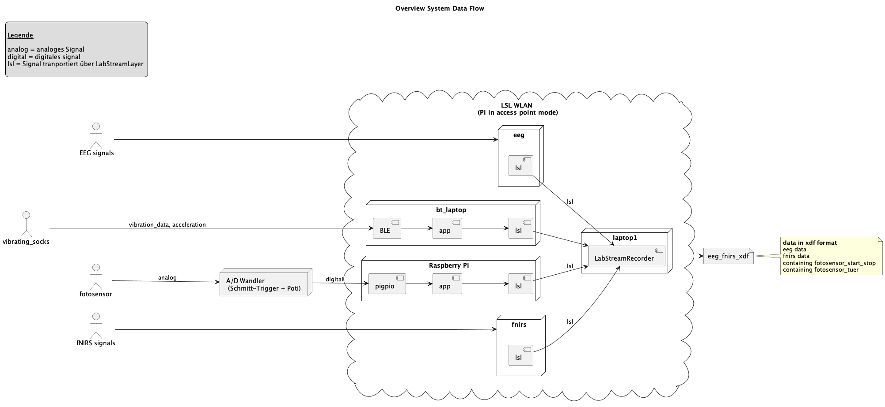

Created: 2025-03-06 Thu 09:24
Frank Landgraf
First Results: Synchronization of Neurophysiological and Biomechanical Data in a Real-Time Virtual Gait Analysis System (GRAIL): A Proof-of-Principle Study https://www.mdpi.com/1424-8220/24/12/3779

LSL is an open-source networked middleware ecosystem to stream, receive, synchronize, and record neural, physiological, and behavioral data streams acquired from diverse sensor hardware.
https://labstreaminglayer.org/ https://labstreaminglayer.readthedocs.io/ https://labstreaminglayer.readthedocs.io/info/supported_devices.html
UDP broadcasts to port 16571 and/or UDP multicast to port 16571 at 224.0.0.1, 224.0.0.183, 239.255.172.215 TCP and UDP connections to the ports 16572-16604
https://labstreaminglayer.readthedocs.io/info/time_synchronization.html
Core Library
https://github.com/sccn/liblsl
Collection of Core Library, language bindings and applications as submodules
C++ (liblsl) vs Python(pylsl + liblsl)
Sample single measurement from all channels of a device
Chunk a sample can be transferred alone or for better latency in chunks of multiple samples
Stream sampled data (timestamp and samples channel values) + metadata
Stream Outlet make streams available to the network
Stream Header and Outlet
// make a new stream_info (100 Hz)
lsl::stream_info info(name,
type,
n_channels,
samplingrate,
lsl::cf_float32,
std::string(name) += type);
// add some description fields
info.desc().append_child_value("manufacturer", "LSL");
lsl::xml_element chns = info.desc().append_child("channels");
for (int k = 0; k < n_channels; k++)
chns.append_child("channel")
.append_child_value("label",
k < 2
? channels[k]
: "Chan-" + std::to_string(k + 1))
.append_child_value("unit", "microvolts")
.append_child_value("type", type);
// make stream outlet
lsl::stream_outlet outlet(info, 0, max_buffered);
hrv_stream = StreamInfo("Heart Rate variability", #name
"", # content type
4 , # four channels
75.0, #sample rate
cf_int32, # channel data type
'healthypi_heart_rate_variability' #id
)
stream_add_channel_metadata(hrv_stream,['meanval',
'sdnn',
'pnn',
'rmsd'
],unit='digits?', type='TBD value')
hrv_stream_outlet = StreamOutlet(hrv_stream, 32, 360)
Push Samples
// variable for the data sample
float sample[1]={};
// ...
while(...) {
// write modified sample values i.e.
sample[0] = (float)((rand() % 1500) / 500.0 - 1.5);
// wait (alternatively everything exept wait
// could be in a timer handler)
std::this_thread::sleep_until(next_sample_time);
// send the sample
outlet.push_sample(sample);
}
# called in a callback or in a loop
hrv_stream_outlet.push_sample([meanval, sdnn, pnn, rmsd],
timestamp)
template <class T, int32_t N>
void push_sample(const T data[N],
double timestamp = 0.0,
bool pushthrough = true);
template <class T>
void push_sample(const std::vector<T> &data,
double timestamp = 0.0,
bool pushthrough = true);
template <class T>
void push_chunk(const std::vector<T> &samples,
double timestamp = 0.0,
bool pushthrough = true);
template <class T>
void push_chunk(const std::vector<T> &samples,
const std::vector<double> ×tamps,
bool pushthrough = true);
also available as push_chunk for pushing chunks of data.
Stream Inlet receiving time series data from a single stream outlet
Resolver resolve streams in the lab network based on queries on metadata (name, content type,id etc.)
// Look for streams
std::vector<lsl::stream_info> streamInfo =
lsl::resolve_stream("name", // property (name, type,
// source_id, desc/manufacture
"demo_data", // value the property should have
1, // minimum number of streams
100 //lsl::FOREVER // timeout
);
if( streamInfo.size() == 0 ) {
std::cerr << "No streams found. Exiting.\n";
return -1;
}
// Create an inlet to receive data
lsl::stream_inlet streamInlet(streamInfo[0]);
streams = resolve_byprop('name', 'VsCommands', timeout=2)
if len(streams) ==0:
continue
inlet = StreamInlet(streams[0])
Pull Samples
// Buffer to hold the received sample data
std::vector<double> sample(channelCount);
double timestamp;
while (true) {
// Pull a sample from the inlet
timestamp = streamInlet.pull_sample(sample);
offset = inlet.time_correction()
// .. do something with it
}
command, timestamp = inlet.pull_sample(2) # 2s timeout
offset = inlet.time_correction()
timestamp += offset
pyXDF is a Python importer for XDF files.
import matplotlib.pyplot as plt
import numpy as np
import pyxdf
data, header = pyxdf.load_xdf("test.xdf")
for stream in data:
y = stream["time_series"]
if isinstance(y, list):
# list of strings, draw one vertical line for each marker
for timestamp, marker in zip(stream["time_stamps"], y):
plt.axvline(x=timestamp)
print(f'Marker "{marker[0]}" @ {timestamp:.2f}s')
elif isinstance(y, np.ndarray):
# numeric data, draw as lines
plt.plot(stream["time_stamps"], y)
else:
raise RuntimeError("Unknown stream format")
plt.show()
Other functions
#include "xdf.h"
int main(int argc,char* argv[]) {
Xdf xdf_data;
xdf_data.load_xdf("test.xdf");
for (auto stream: xdf_data.streams) {
for (size_t i=0; i < stream.time_stamps.size();i++) {
std::cout << stream.time_stamps[i];
for (auto channel: stream.time_series[i]) {
std::cout << ';' << channel;
}
std::cout << std::endl;
}
}
Thank you for your time.